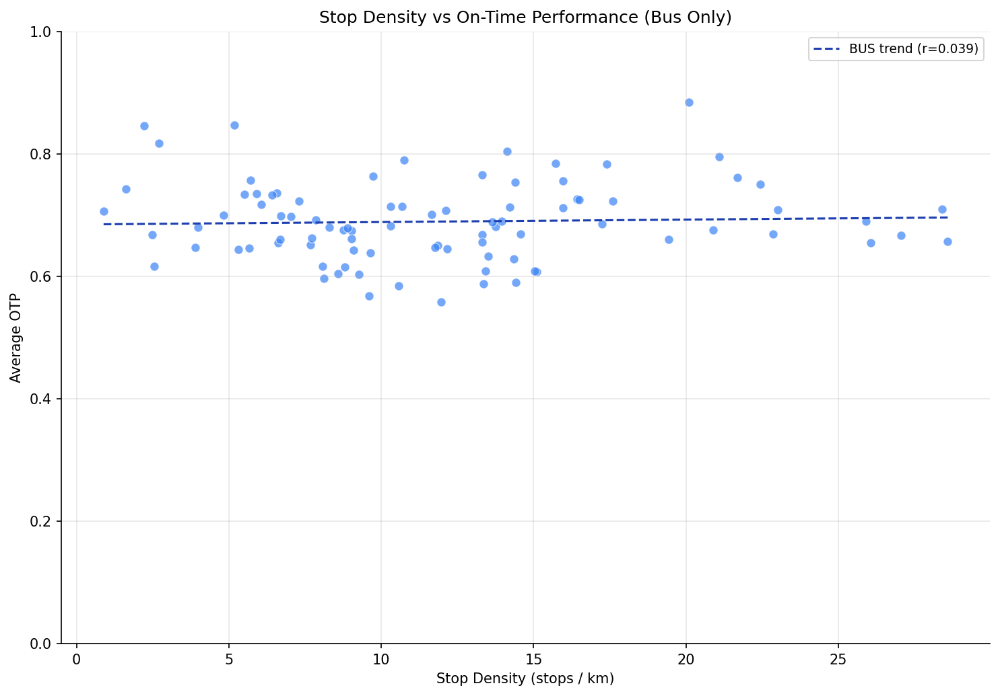
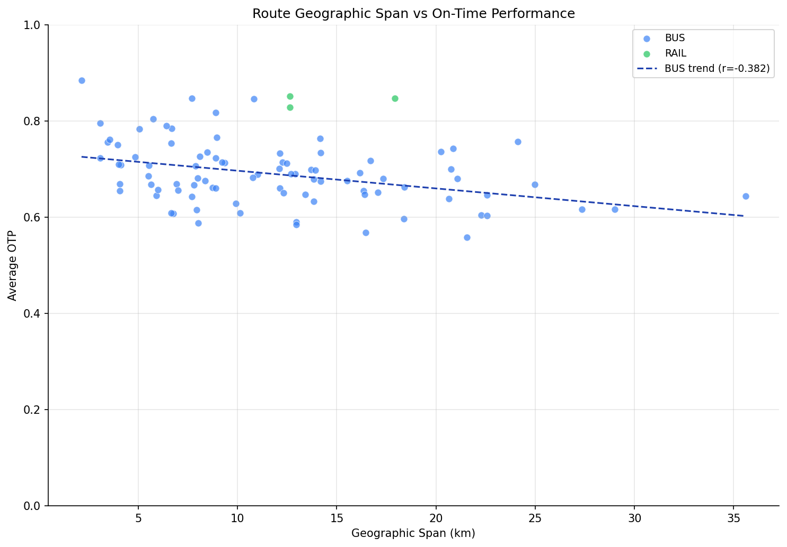

Analysis
12: Route Geographic Span vs OTP
Route and Service Drivers
Data Provenance
flowchart LR 12_geographic_span["12: Route Geographic Span vs OTP"] t_otp_monthly["otp_monthly"] --> 12_geographic_span 01_data_ingestion["Data Ingestion"] --> t_otp_monthly t_route_stops["route_stops"] --> 12_geographic_span 01_data_ingestion["Data Ingestion"] --> t_route_stops t_routes["routes"] --> 12_geographic_span 01_data_ingestion["Data Ingestion"] --> t_routes t_stops["stops"] --> 12_geographic_span 01_data_ingestion["Data Ingestion"] --> t_stops d1_12_geographic_span["numpy (lib)"] --> 12_geographic_span d2_12_geographic_span["polars (lib)"] --> 12_geographic_span d3_12_geographic_span["scipy (lib)"] --> 12_geographic_span classDef page fill:#dbeafe,stroke:#1d4ed8,color:#1e3a8a,stroke-width:2px; classDef table fill:#ecfeff,stroke:#0e7490,color:#164e63; classDef dep fill:#fff7ed,stroke:#c2410c,color:#7c2d12,stroke-dasharray: 4 2; classDef file fill:#eef2ff,stroke:#6366f1,color:#3730a3; classDef api fill:#f0fdf4,stroke:#16a34a,color:#14532d; classDef pipeline fill:#f5f3ff,stroke:#7c3aed,color:#4c1d95; class 12_geographic_span page; class t_otp_monthly,t_route_stops,t_routes,t_stops table; class d1_12_geographic_span,d2_12_geographic_span,d3_12_geographic_span dep; class 01_data_ingestion pipeline;
Findings
Findings: Route Geographic Span vs OTP
Summary
Geographic span (the maximum distance between any two stops on a route) is a moderate negative predictor of OTP within bus routes (r = -0.38, p < 0.001), but stop count remains the stronger predictor after controlling for the other. Partial correlation analysis disentangles the two: stop count predicts OTP even after controlling for span (partial r = -0.41, p < 0.001), while span's independent contribution is smaller (partial r = -0.23, p = 0.03).
Key Numbers
- Span vs OTP (bus only, primary): Pearson r = -0.38 (p < 0.001, n = 89), Spearman rho = -0.37 (p < 0.001)
- Span vs OTP (all routes, secondary): r = -0.32 (p = 0.002, n = 92) -- includes Simpson's paradox risk
- Stop density vs OTP (bus only): r = 0.04 (p = 0.71) -- not significant
- Span vs OTP | stop count (bus, partial): r = -0.23 (p = 0.03)
- Stop count vs OTP | span (bus, partial): r = -0.41 (p < 0.001)
- Span-stop count collinearity: r = 0.41
Observations
- The bus-only correlation (r = -0.38) is actually stronger than the all-mode correlation (r = -0.32). The pooled-mode result was muted by Simpson's paradox -- rail routes have moderate span but high OTP, pulling the all-mode trend line toward zero.
- Span and stop count are moderately correlated (r = 0.41), but not so strongly as to make partial correlation unreliable.
- After controlling for stop count, span still has a small but significant independent effect -- longer routes face additional challenges beyond just having more stops (longer exposure to traffic, more variance in conditions).
- However, stop count's partial correlation (-0.41) is nearly twice span's (-0.23), confirming that the number of stops matters more than the distance covered.
- Stop density (stops per km) shows no correlation with OTP at all (r = 0.04), meaning that tightly-packed stops are no worse than widely-spaced stops once total count and distance are accounted for.
Implication
Both stop count and route distance independently degrade OTP, but stop consolidation is the higher-leverage intervention. Shortening routes would help modestly, but eliminating stops on existing routes would have roughly twice the impact per unit of change.
Caveats
- Geographic span (max pairwise distance) is a crude proxy for actual route length. GTFS shape data would provide a more accurate route-length measurement.
- Routes with fewer than 12 months of data are excluded to reduce noise.
Review History
- 2026-02-10: RED-TEAM-REPORTS/2026-02-10-analyses-12-18.md — 4 issues (1 significant). Bus-only correlations now primary; Spearman added.
Output

scatter plot of stop density vs OTP.
per-route span, stop density, stop count, avg OTP.

scatter plot of geographic span vs OTP.
Methods
Methods: Route Geographic Span vs OTP
Question
Does the geographic extent of a route predict on-time performance independently of stop count? Analysis 07 found stop count is the strongest OTP predictor (r = -0.53), but routes with many stops also tend to cover more distance. Disentangling the two could clarify whether the problem is "too many stops" or "too long a route."
Approach
- For each route, collect all stop coordinates from
route_stopsjoined tostops. - Compute geographic span as the maximum haversine distance between any pair of stops on the route (the diameter of the stop set in km).
- Compute stop density as stops per km of span, to capture how tightly packed stops are.
- Correlate span, stop density, and stop count separately with average OTP (Pearson and Spearman).
- Use partial correlation to test whether span predicts OTP after controlling for stop count, and vice versa.
- Scatter plots for span vs OTP and stop density vs OTP.
Data
| Name | Description | Source |
|---|---|---|
route_stops |
Links routes to stops | prt.db table |
stops |
Lat/lon coordinates | prt.db table |
otp_monthly |
Monthly OTP per route | prt.db table |
routes |
Mode classification | prt.db table |
Output
output/geographic_span.csv-- per-route span, stop density, stop count, avg OTPoutput/span_vs_otp.png-- scatter plot of geographic span vs OTPoutput/density_vs_otp.png-- scatter plot of stop density vs OTP
Sources
| Name | Type | Description |
|---|---|---|
| otp_monthly | table | Monthly OTP values by route. Produced by Data Ingestion. |
| route_stops | table | Route-stop bridge with service frequency metrics. Produced by Data Ingestion. |
| routes | table | Route dimension table. Produced by Data Ingestion. |
| stops | table | Physical stop dimension table. Produced by Data Ingestion. |
| numpy | dependency | Numerical computing library for vectorized arrays and matrix operations. |
| polars | dependency | Dataframe library used for fast tabular data transformations and aggregation. |
| scipy | dependency | Scientific computing library used for statistical tests and numerical routines. |